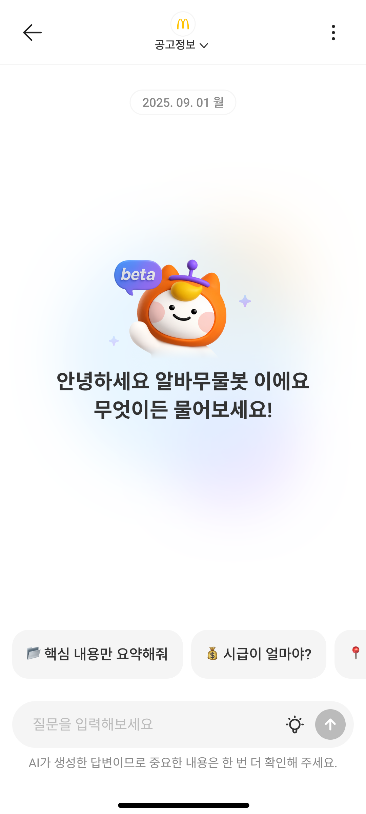
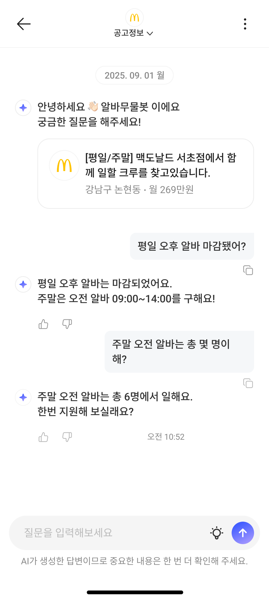
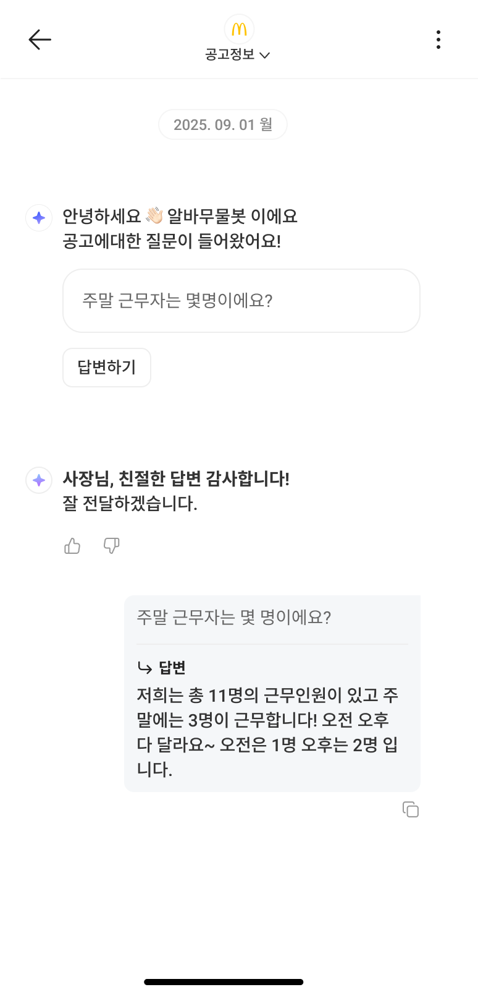
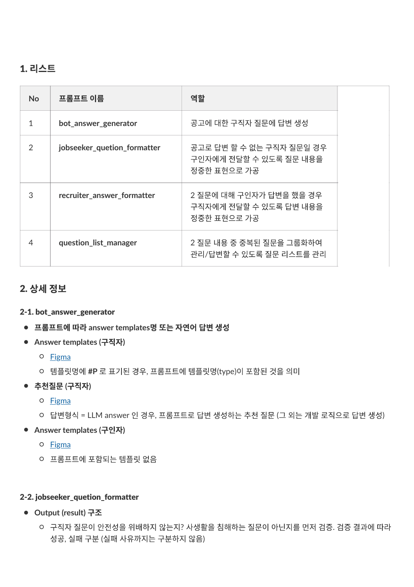
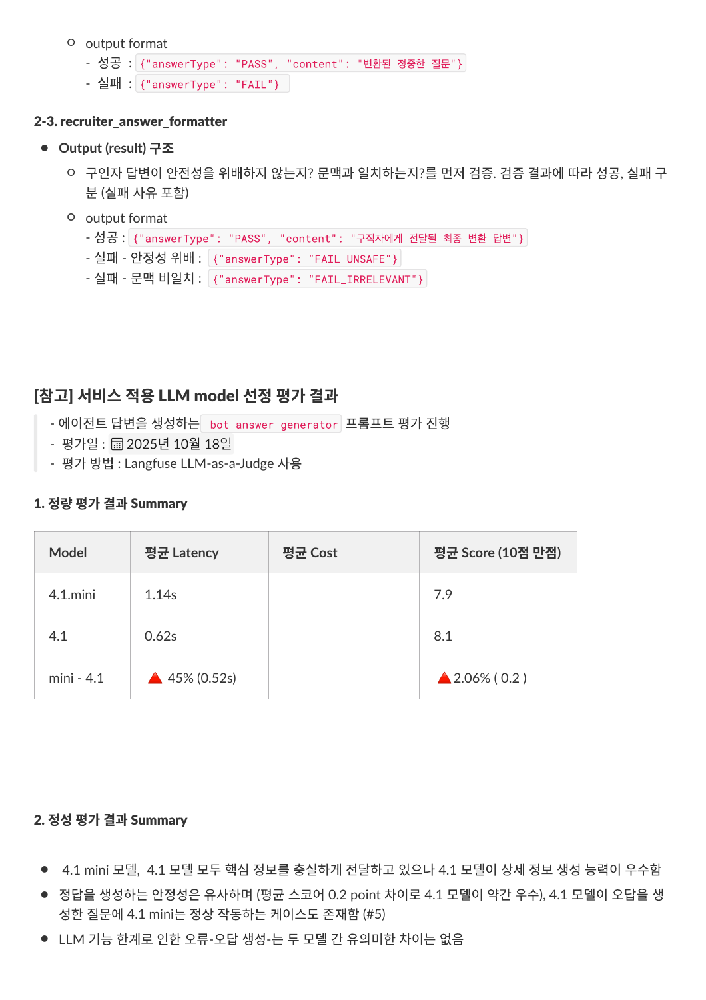
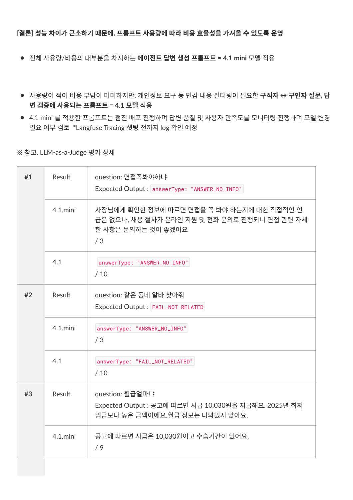
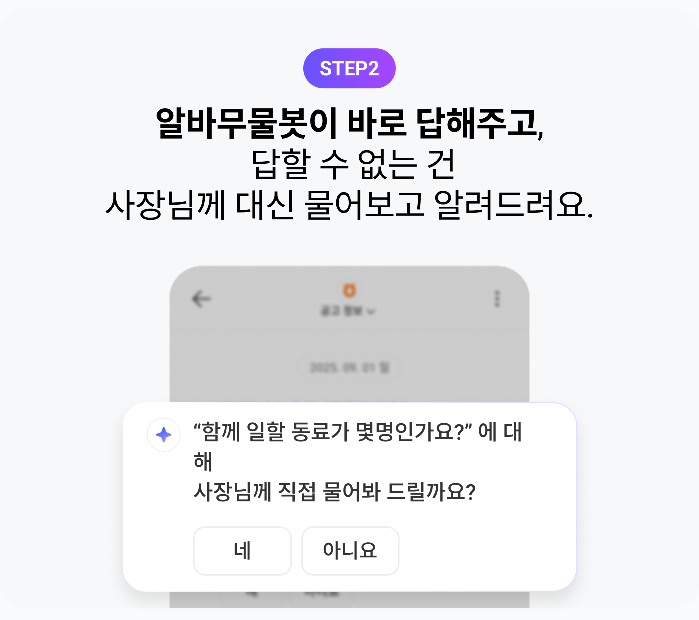
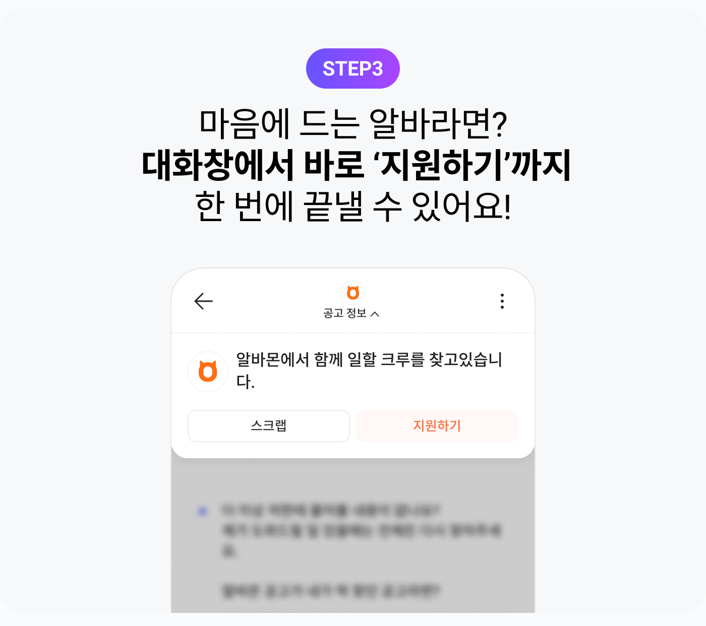

지원 이후의 채팅을, 지원 전의 탐색으로
생성형 AI를 통해 대화로 정보를 찾고 서비스를 이용하는 경험이 일반화되던 시기, 알바몬에서도 생성형 AI를 제품에 적용해 가능성을 확인해 보려 했습니다. 저는 당시 알바몬 채팅 플랫폼 PO로 구인기업과 구직자의 커뮤니케이션을 담당하고 있었습니다. 알바몬의 채팅은 지원 이후에만 사용되고 있었지만 AI와 대화하며 원하는 공고를 찾고 간편하게 지원한 뒤 구인기업과 소통하는 과정을 하나의 채팅 경험으로 연결할 수 있다고 생각했습니다. 알바무물봇은 이 구상을 실제 서비스에서 확인하기 위한 첫 시도였습니다.
첫 시도는, 이미 관심을 보인 공고에서
첫 구현 범위는 구직자가 이미 관심을 보인 공고에 질문하고 지원 판단에 필요한 정보를 확인하는 경험으로 정했습니다. 궁금한 조건을 대화로 확인할 수 있다면 지원 여부를 결정하는 시간이 줄고 조건이 맞는 공고에는 더 빨리 지원할 것이라는 가설을 세웠습니다. 이처럼 구직자의 의사결정이 빨라지면 구인기업의 채용에 걸리는 시간도 줄어들 것이라고 기대했습니다.
공고 Q&A는 기존 채팅 플랫폼을 활용하면서 답변에 필요한 데이터를 해당 공고로 한정할 수 있어 생성형 AI를 빠르게 실서비스에 적용해 보기에도 적합했습니다. 질문을 확인하고 공고에 근거해 답하는 처리 순서와 분기도 미리 정할 수 있었습니다. 이처럼 정해진 흐름 안에서 AI가 동작하도록 하면 답변의 일관성을 관리하면서 단계별 테스트와 오류 추적까지 수행하기 수월하다고 판단했습니다.
다만 AI가 공고에 있는 정보를 찾아 답하는 것만으로는 충분하지 않았습니다. 알바 구직에서는 급여와 근무시간, 근무요일 같은 조건이 지원 결정에 중요하지만 이러한 근무조건을 ‘협의’로 등록한 공고가 약 55%였습니다. 필요한 정보가 빠져 있거나 정규 필드와 상세 요강에 서로 다른 조건이 적힌 경우도 있었습니다.
이런 불확실성이 남으면 구직자는 지원을 미루거나 조건을 충분히 알지 못한 채 지원할 수 있고 구인기업은 지원 이후에 조건을 다시 설명하고 조율해야 합니다. 공고에 없는 정보도 지원 전에 확인하도록 연결하면 구직자의 판단을 돕는 동시에 구인기업의 불필요한 확인과 조율을 줄일 수 있다고 봤습니다. 이를 위해 AI가 공고에서 찾아 답하는 흐름과 구인기업에 추가로 확인하는 흐름을 함께 설계했습니다.
질문을 판단하고, 답할 근거에 따라 흐름을 나눴습니다
알바무물봇은 처리 순서와 분기를 미리 설계한 워크플로 기반 LLM 챗봇입니다. 먼저 질문이 해당 공고와 관련 있는지, 부적절한 내용이나 개인정보 요구가 포함돼 있는지 확인합니다. 응답 가능한 질문이면 공고에서 답할 근거를 찾고 확인된 정보로 AI가 답하도록 했습니다.
공고에 답이 없거나 정보가 서로 다르면 AI가 임의로 판단하지 않고 구인기업에 물어볼지 구직자에게 확인합니다. 구직자가 원하면 질문을 전달하고 구인기업의 답변은 질문한 구직자에게 안내하는 동시에 해당 공고의 응답 근거로 저장합니다. 이후 다른 구직자가 같은 내용을 물으면 저장된 답변을 활용하도록 설계했습니다.
구직자의 질문질문 확인공고 관련성, 부적절한 내용과 개인정보 요구 확인응답 범위 밖의 질문은 안내 후 종료공고에서 답할 근거를 확인할 수 있나요?근거가 있는 경우AI가 공고에 근거해 답변확인된 근무조건 안내정보가 없거나 서로 다른 경우구직자에게 전달 의향 확인“사장님께 물어볼까요?”원하지 않으면 질문을 전달하지 않음구인기업에 질문 전달답변 대기 후 구직자에게 안내해당 공고의 응답 근거로 저장다른 구직자의 같은 질문에도 활용질문에 답할 근거에 따른 처리 흐름
공고에 없는 답을 AI가 정하지 않도록
검수 과정에서 공고의 정규 필드와 상세 요강에 서로 다른 조건이 있을 때, AI가 일부 정보만 선택하거나 잘못 합쳐 답하는 사례를 확인했습니다. 답변의 정확성과 일관성을 유지하기 위해 공고에서 확인한 정보만 근거로 사용하고 조건이 서로 다르면 어느 한쪽을 임의로 선택하거나 섞어 답하지 않도록 프롬프트에 기준을 담았습니다.
정보가 없거나 상충할 때는 확인할 수 없다는 점을 안내한 뒤, 구인기업에 질문할지 구직자에게 물었습니다. 불확실한 내용을 자연스러운 문장으로 단정하지 않는 것까지 답변 품질의 기준으로 삼았습니다.
질문의 의도는 유지하고, 전달할 표현은 다듬었습니다
구직자가 보낸 질문은 메시지 그대로 구인기업에 전하지 않았습니다. 봇과 대화할 때는 반말이나 짧은 표현을 쓰더라도 구인기업에 전달하는 질문에는 정중한 표현이 필요했기 때문입니다. 구직자가 구인기업에 묻기를 선택하면 AI가 질문의 의도를 유지하면서 문장을 다듬어 전달하도록 했습니다.
구인기업의 답변도 안전성과 질문 맥락을 확인하고 구직자에게 전달할 문장으로 정리했습니다. 답변은 해당 공고의 응답 근거로 저장해 같은 질문에 구인기업이 반복해서 응대하지 않아도 되도록 했습니다.



네 개의 프롬프트를 설계하고, 평가로 다듬었습니다
제품 흐름을 구체화하면서 공고 기반 답변 생성, 구직자 질문 변환, 구인기업 답변 변환, 중복 질문 관리를 맡는 네 개의 프롬프트를 직접 설계했습니다. 각 역할의 입력과 출력, 응답 기준을 정한 뒤에는 구직자가 실제로 받는 공고 기반 답변의 품질을 중심으로 모델과 프롬프트를 비교하고 다듬었습니다.
공고 기반 답변 생성공고를 근거로 답변과 안내를 생성합니다.구직자 질문 변환질문의 의도를 유지하며 구인기업에 전달할 정중한 문장으로 바꿉니다.구인기업 답변 변환안전성과 맥락을 확인하고 구직자에게 전달할 답변으로 정리합니다.중복 질문 관리같은 내용의 질문을 묶어 관리하고 답변할 수 있도록 합니다.
1. 업종별 예상 질문과 답변 구성
업종별 공고를 분석하고 AI의 도움을 받아 구직자가 물을 만한 질문을 뽑았습니다. 이 질문에 실제 공고를 근거로 답변을 생성해 모델과 프롬프트를 평가할 사례를 구성했습니다.
2. 팀 검수로 골든셋 보완
팀원 전원이 검수에 참여해 생성된 답변 전체의 정오답과 문장 완성도를 확인했습니다. 잘못되거나 부족한 답변을 수정해 평가의 기준이 되는 정답 사례, 즉 골든셋을 보완했습니다.
3. 모델과 프롬프트 비교 평가
LLM 서비스의 실행 기록과 품질 평가, 프롬프트 버전을 관리하는 도구인 Langfuse를 활용했습니다. 별도의 LLM이 공고 원문과 골든셋을 참고해 답변의 정확성, 질문과의 관련성, 필요한 정보의 완결성, 상황에 맞는 표현을 평가하도록 평가 프롬프트를 설계했습니다. 모델과 프롬프트별 결과를 비교해 서비스에 적용할 조합을 정했습니다.
4. 수정과 재평가 반복
초기 조합을 정한 뒤에도 출시 전까지 실제 운영 환경의 공고를 무작위로 선정하고 질문을 적용해 테스트했습니다. 이때 골든셋은 좋은 답변의 형식과 판단 기준을 보여주는 예시로 활용하고 새 답변의 사실관계는 해당 공고 원문을 평가용 LLM에 함께 전달해 확인했습니다. 프롬프트 수정, 답변 생성과 평가, 결과 검토를 반복하며 사실 오류와 불충분한 설명, 상황에 맞지 않는 표현을 줄이도록 프롬프트를 다듬었습니다.



프롬프트 설계와 평가 자료 일부
평가부터 배포까지, PO가 답변 개선을 이어가도록
Langfuse는 출시 전 평가뿐 아니라 출시 후 프롬프트 운영에도 활용했습니다. 응답에 문제가 있거나 제품 변화에 맞춰 지침을 바꿀 때마다 개발팀의 코드 수정과 서비스 배포를 기다리면 개선이 늦어질 수 있기 때문입니다.
개발팀과 함께 PO가 Langfuse에서 프롬프트를 수정하고 운영 환경과 유사한 환경에서 테스트한 뒤 프로덕션에 배포할 수 있는 흐름을 구축했습니다. 제품 담당자가 답변의 설계와 평가에 이어 출시 후 개선 반영까지 수행할 수 있게 됐고 프롬프트를 고칠 때마다 서비스 코드 배포에 의존하는 일도 줄였습니다.
대화형 구직의 첫 적용, 이용 반응과 운영 기반을 확인했습니다
출시 후 전체 요청의 98% 이상에 5초 이내로 응답했습니다. 답변 정확도는 85% 이상으로 평가됐습니다(출시 후 2주간 LLM 평가와 사람의 검수를 병행). 지원 행동에서도 긍정적인 이용 반응을 확인했습니다. 동일 날짜와 동일 공고 기준으로 봇 이용자의 당일 지원 전환율은 전체 조회자보다 40% 이상 높게 관찰됐습니다. 또한 질문이 발생한 채팅방의 약 23%에서 해당 공고 지원이 확인됐습니다. 대화로 정보를 확인하는 경험에서 지원 행동이 함께 나타났다는 점은 가설을 더 살펴볼 근거가 됐습니다. 다만 봇을 이용한 구직자의 지원 의향이 원래 더 높았을 수 있기 때문에 이 결과만으로 의사결정 시간이나 채용 리드타임이 단축됐다고 판단하지는 않았습니다.
이 과정에서 AI가 답할 범위와 경계를 정하고 답변 품질을 평가해 개선하고 배포하는 절차를 설계해, 대화형 기능의 구현부터 안정적인 운영까지 이어갈 수 있는 제품 설계와 구현 기준을 마련했습니다.


서비스 소개 자료 일부
알바몬의 미션은 구직자가 원하는 일자리를, 구인기업이 적합한 직원을 더 빨리 찾도록 돕는 것입니다. 알바무물봇은 이 미션을 위한 과제를 생성형 AI로 풀어본 첫 시도였습니다. 공고를 일일이 살펴보지 않고도 필요한 정보를 묻고 공고에 없는 내용은 구인기업에게 확인할 수 있도록 했습니다. 실제 서비스에서 답변 품질과 대화 이후 지원으로 이어지는 이용 반응을 확인했습니다. 더 많은 구직자가 이용하도록 진입 경험을 개선하고 구인기업의 참여를 늘려 답변이 축적되고 재사용되는 흐름을 다듬는 일이 남아 있습니다. 이러한 경험이 실제 지원 결정과 채용에 걸리는 시간을 줄이는지 검증하는 것도 후속 과제입니다.